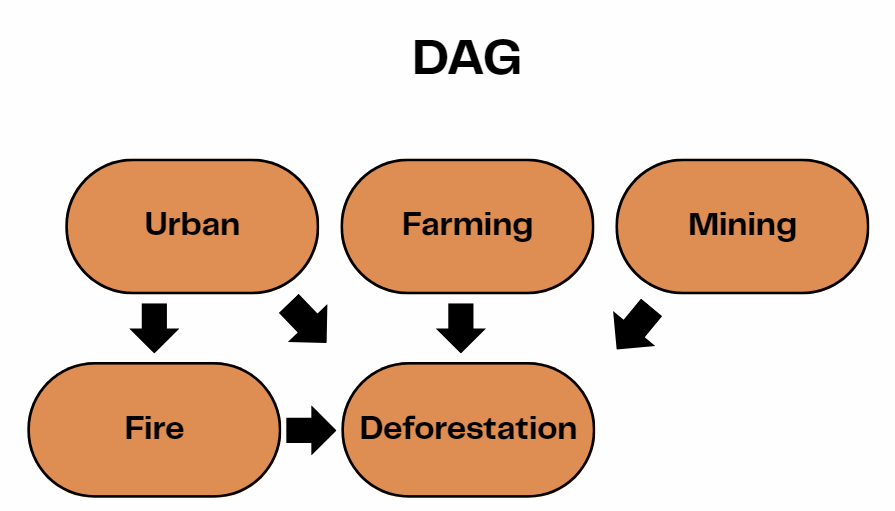
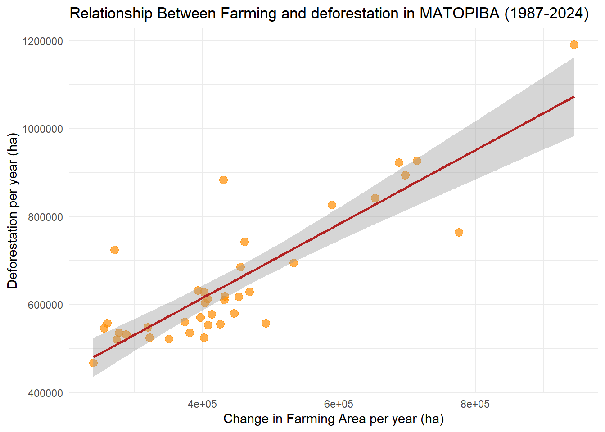
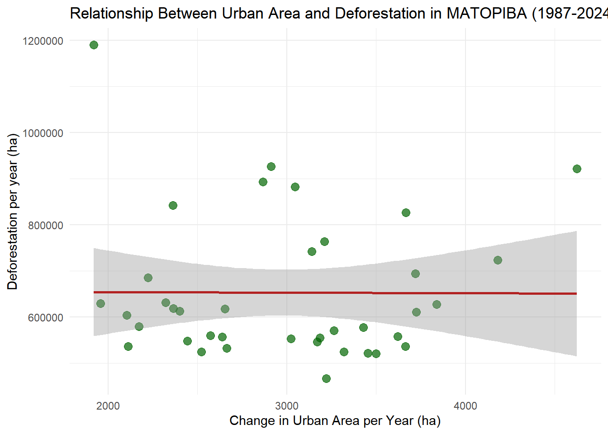
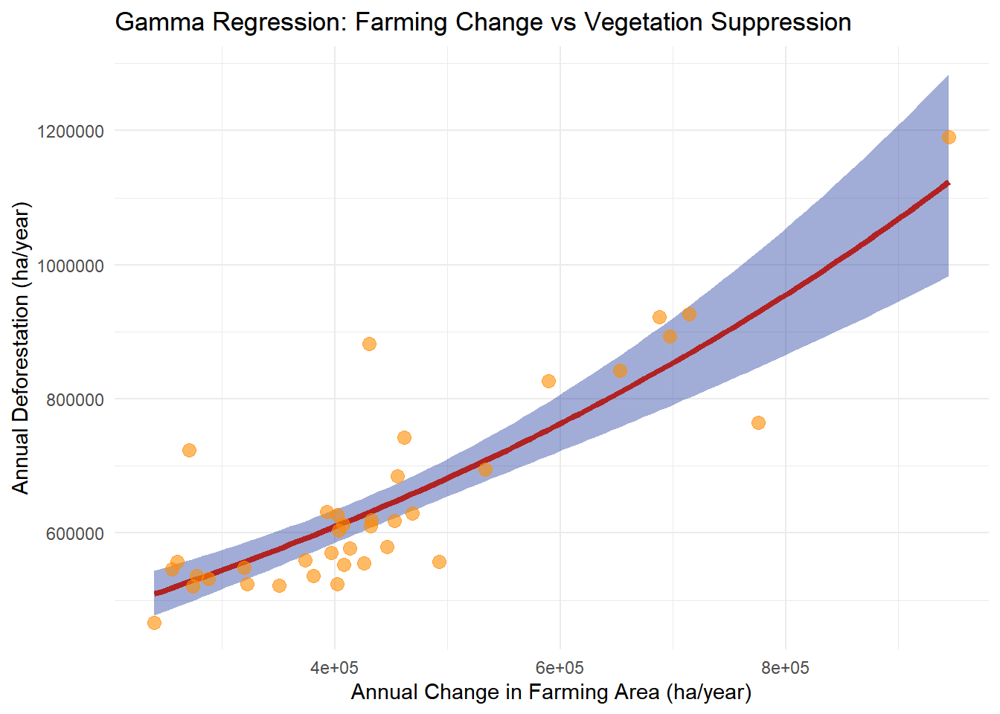

Code
library(tidyverse)
library(tidyterra)
library(readr)
library(kableExtra)The MATOPIBA region, an acronym formed from the Brazilian states of Maranhão, Tocantins, Piauí, and Bahia, is located in the northeastern and central parts of Brazil and encompasses areas of the Cerrado biome, a biodiversity-rich tropical savanna. Changes in land use and land cover in the MATOPIBA region have shown a high incidence of agricultural activities (Miranda et al., 2014), indicating an increase in the conversion of native vegetation.
Using MapBiomas data from 1987 to 2024, this project evaluates the temporal evolution of native vegetation loss and examines how key drivers, such as farming, fire occurrence, mining, and urban expansion,contribute to deforestation patterns. To support this assessment, a Gamma regression model was employed to analyze the magnitude and distribution of vegetation suppression and identify the factors most strongly associated with it in MATOPIBA.
What are the main drivers of deforestation in the MATOPIBA region of Brazil between 1987 and 2024?
The data used in this project was collected in the MapBiomas platform, you can find it here by accessing their dashbord and specifying the MATIPIBA region: MapBiomas
This dataset contains annual information on the suppression of primary and secondary vegetation. It quantifies the total area (in hectares) converted from natural vegetation to anthropogenic land use each year in MATOPIBA.
The LULC dataset provides the annual classification of land cover and land use across different categories such as forest, savanna, grassland, agriculture, pasture, urban, mining and other classes.
This dataset records the total annual burned area for MATOPIBA, indicating the extent of fire events.
Variable description
The following variables were used in this project:
Dependent Variable
Independent variables
Urban: Annual change in urban area, measured in hectares.
Farming: Annual change in the combined agricultural and livestock farming area, measured in hectares.
Mining: Annual change in mining area, measured in hectares.
Fire: Total burned area per year, measured in hectares.

Import libraries
library(tidyverse)
library(tidyterra)
library(readr)
library(kableExtra)Read data
# Read data
fire_ma <- read_csv("data/Série temporal de Fogo • Anual por classe • 1985 - 2024.csv")
deforestation_ma <- read_csv("data/Série temporal de Desmatamento • Anual por classe • 1985 - 2024.csv")
lulc_ma <- read_csv("data/Série temporal de Cobertura • Cobertura por classe • 1985 - 2024.csv")Clean the datasets using a function
# Function to clean and convert all columns in a dataframe to numeric
convert_to_numeric <- function(df) {
df %>%
mutate(across(everything(), ~ .x %>%
str_remove_all(" ") %>%
str_remove_all("\\.") %>%
na_if("") %>%
na_if("NA") %>%
as.numeric() %>%
suppressWarnings()))
}Apply function to all datasets
# Apply cleaning function
fire <- convert_to_numeric(fire_ma)
lulc <- convert_to_numeric(lulc_ma)
deforestation <- convert_to_numeric(deforestation_ma)Calculate total farming area to use as response variable
# Sum agriculture and livestock farming columns to have the total of farming
lulc <- lulc %>%
mutate(total_farming = rowSums(across(12:23), na.rm = TRUE))
# Sum primary and secondary deforestation
deforestation <- deforestation %>%
mutate(total_deforestation = rowSums(across(2:3), na.rm = TRUE))Correct urban area data
# Fix missing decimal in urban area column by multiplying by 10
lulc <- lulc %>%
mutate(urban_area = case_when(
row_number() %in% c(10, 22, 39) ~ `Área Urbanizada` * 10,
TRUE ~ `Área Urbanizada`))Calculate annual changes in land use
# Calculate year changes in LULC variables
lulc <- lulc %>%
mutate(
change_farming = total_farming - lag(total_farming),
change_mining = `Mineração` - lag(`Mineração`),
change_urban = urban_area - lag(urban_area))Merge datasets and filter
# Join datasets
matopiba_join <- deforestation %>% left_join(lulc, by = "Ano")
matopiba = matopiba_join %>%
left_join(fire, by = "Ano") %>%
filter(total_deforestation > 0, !is.na(total_deforestation)) %>%
rename(total_fire = `Total queimado`)ggplot(matopiba, aes(x = total_fire, y = total_deforestation )) +
geom_point(color = "darkblue", size = 3, alpha = 0.7) +
geom_smooth(method = "glm", se = TRUE, color = "firebrick") +
theme_minimal() +
labs(
title = "Relationship Between fire and deforestation in MATOPIBA (1987-2024)",
x = "Burned area per year (ha)",
y = "Deforestation (ha)")
ggplot(matopiba, aes(x = change_farming, y = total_deforestation )) +
geom_point(color = "darkorange", size = 3, alpha = 0.7) +
geom_smooth(method = "lm", se = TRUE, color = "firebrick") +
theme_minimal() +
labs(
title = "Relationship Between Farming and deforestation in MATOPIBA (1987-2024)",
x = "Change in Farming Area per year (ha)",
y = "Deforestation per year (ha)"
)
ggplot(matopiba, aes(x = change_mining, y = total_deforestation)) +
geom_point(color = "purple", size = 3, alpha = 0.7) +
geom_smooth(method = "glm", se = TRUE, color = "firebrick") +
theme_minimal() +
labs(
title = "Relationship Between Mining and Deforestation in MATOPIBA (1987-2024)",
x = "Change in Mining Area per Year (ha)",
y = "Deforestation Area per year (ha)" )
ggplot(matopiba, aes(x = change_urban, y = total_deforestation)) +
geom_point(color = "darkgreen", size = 3, alpha = 0.7) +
geom_smooth(method = "glm", se = TRUE, color = "firebrick") +
theme_minimal() +
labs(
title = "Relationship Between Urban Area and Deforestation in MATOPIBA (1987-2024)",
x = "Change in Urban Area per Year (ha)",
y = "Deforestation per year (ha)")
I choose to model the annual vegetation loss, a continuous, and positive variable using a Gamma regression with a log link. The Gamma distribution is appropriate because vegetation loss is skewed to the right, and consist of positive numbers.
The model assumes that vegetation loss increases or decreases with predictors such as agriculture, fire, mining, and urbanization. Using a log link means each coefficient represents the percentage change in expected deforestation for a one-unit change in a predictor.
# Histogram to check distribution and skewness of deforestation data
ggplot(matopiba, aes(x = total_deforestation)) +
geom_histogram(bins = 10, fill = "darkgreen", color = "black", alpha = 0.7) +
geom_vline(aes(xintercept = mean(total_deforestation, na.rm = TRUE), color = "Mean"), linewidth = 1.5) +
geom_vline(aes(xintercept = median(total_deforestation, na.rm = TRUE), color = "Median"), linewidth = 1.5) +
scale_color_manual(name = "",
values = c("Mean" = "red", "Median" = "blue")) +
theme_minimal() +
labs(
title = "Distribution of Total Deforestation in MATOPIBA (1987-2024)",
x = "Total Deforestation (ha)",
y = "Frequency") 
Gamma model notation
\[ \begin{align} \text{Deforestation} &\sim Gamma(\mu, ϕ) \\ log(\mu) &= \beta_0 + \beta_1 \text{Farming} + \beta_2 \text{Urban} + \beta_3 \text{Mining} + \beta_4 \text{Fire} \end{align} \]
The simulation serves as a validation step to ensure the Gamma regression model is correctly specified and capable of recovering known parameters.
Step 1: Choose parameters and predictors
set.seed(123)
# Simulate number of observations
n <- 500
# Choose true parameter values
beta0 <- 1
beta1 <- 2 # farming effect
phi <- 4 # shape parameter
# Simulate predictor variable by generating random deviates
farming <- runif(n, min = 0, max = 50)Step 2: Use the rgamma() function to generate response values using the shape and scale parameters
# Simulate Gamma distributed response with log linear mean
deforestation_sim <- rgamma(n, shape = phi, scale = exp(beta0 + beta1*farming)/phi)
# Combine into a data frame
sim_data <- tibble(deforestation_sim, farming)Step 3. Fit the model to the simulated data
# Fit Gamma GLM to simulated data
fit <- glm(deforestation_sim ~ farming,
family = Gamma(link = "log"),
data = sim_data)Step 4. Compare estimated vs true parameters
# Get the estimated and true parameters
true_params <- c(beta0, beta1)
est_params <- coef(fit)
# Create a dataframe comparing true and estimated values
df_sim <- tibble(parameter = names(est_params),
true_value = round(true_params, 3),
estimated = round(est_params, 3))Step 5. Create comparison table
# Display comparison table
df_sim %>%
kbl(caption = "Estimated vs true parameters") %>%
kable_styling(bootstrap_options = c("striped", "hover"))| parameter | true_value | estimated |
|---|---|---|
| (Intercept) | 1 | 1.035 |
| farming | 2 | 1.998 |
H₁: In the MATOPIBA region, increases in agricultural land use, fire area incidence, mining area activity, and urban expansion are associated with higher levels of native vegetation loss.
H₀: These land-use drivers have no significant association with native vegetation loss in MATOPIBA.
Fit a Gamma GLM with log link to model total deforestation in MATOPIBA
model_gamma <- glm(total_deforestation ~ change_farming + change_urban + change_mining + total_fire,
data = matopiba,
family = Gamma(link = "log"))
sum_model <- summary(model_gamma)Extract model coefficients
coef(model_gamma) (Intercept) change_farming change_urban change_mining total_fire
1.276162e+01 1.122991e-06 2.411644e-05 8.424645e-04 2.416640e-09 Extract model confidence interval
confint(model_gamma) 2.5 % 97.5 %
(Intercept) 1.249961e+01 1.302462e+01
change_farming 8.731579e-07 1.376317e-06
change_urban -3.557639e-05 8.395461e-05
change_mining -1.387431e-03 3.120978e-03
total_fire -1.570257e-08 2.074489e-08Create prediction grid
# Create pred_grid with all variables, holding others at their mean
pred_farming <- expand_grid(
change_farming = seq(
min(matopiba$change_farming, na.rm = TRUE),
max(matopiba$change_farming, na.rm = TRUE),
length.out = 100 ),
change_urban = mean(matopiba$change_urban, na.rm = TRUE),
change_mining = mean(matopiba$change_mining, na.rm = TRUE),
total_fire = mean(matopiba$total_fire, na.rm = TRUE))
# Generate predictions
class_model_pred <- pred_farming %>%
mutate(predicted_deforestation = predict(object = model_gamma,
newdata = pred_farming,
type = "response"))Calculate standard errors on link scale
model_se <- predict(object = model_gamma,
newdata = pred_farming,
type = 'link',
se.fit = TRUE)Calculate confidence intervals for predictions
# Get the link inverse function from the MODEL
linkinv <- family(model_gamma)$linkinv
# Generate the predictions with confidence intervals
class_model_pred <- pred_farming %>%
mutate(
# Predictions on link scale
log_l = model_se$fit,
# Standard error on link scale
log_se = model_se$se.fit,
# 95% CI on link scale using quantiles
log_lwr = qnorm(0.025, mean = log_l, sd = log_se),
log_upr = qnorm(0.975, mean = log_l, sd = log_se),
# Transform from link space to response space
fit = linkinv(log_l),
lwr = linkinv(log_lwr),
upr = linkinv(log_upr))Visualize farming change effect on deforestation
ggplot() +
# Confidence ribbon
geom_ribbon(
data = class_model_pred,
aes(x = change_farming, ymin = lwr, ymax = upr),
fill = "#143399", alpha = 0.4) +
# Fitted line
geom_line(
data = class_model_pred,
aes(x = change_farming, y = fit),
color = "firebrick", linewidth = 1.5) +
# Observed data
geom_point(
data = matopiba,
aes(x = change_farming, y = total_deforestation),
color = "darkorange", size = 3, alpha = 0.6) +
labs(
title = "Gamma Regression: Farming Change vs Vegetation Suppression",
x = "Annual Change in Farming Area (ha/year)",
y = "Annual Deforestation (ha/year)" ) +
theme_minimal()
| Variable | Estimate | Std. Error | p-value | 95% CI Lower | 95% CI Upper | |
|---|---|---|---|---|---|---|
| Intercept | 1.276e+01 | 1.343e-01 | < 2e-16 | 1.250e+01 | 1.302e+01 | |
| Change in Farming | 1.123e-06 | 1.310e-07 | 6.55e-10 | 8.732e-07 | 1.376e-06 | |
| Change in Urban | 2.412e-05 | 3.112e-05 | 0.444 | -3.558e-05 | 8.395e-05 | |
| Change in Mining | 8.425e-04 | 1.160e-03 | 0.473 | -1.387e-03 | 3.121e-03 | |
| Total Fire | 2.417e-09 | 9.236e-09 | 0.795 | -1.570e-08 | 2.074e-08 |
Estimate: 1.123e-06 (p < 0.001)
Interpretation: For every 1 hectare increase in farming area, deforestation increases by approximately 0.0001% (exp(1.123e-06) ≈ 1.000001)
95% CI: [8.66e-07, 1.38e-06] (approximate)
Estimate: 2.412e-05 (p = 0.444)
Interpretation: No statistically significant relationship between urban expansion and vegetation suppression.
Estimate: 8.425e-04 (p = 0.473)
Interpretation: No statistically significant relationship between mining expansion and vegetation suppression
Estimate: 2.417e-09 (p = 0.795)
Interpretation: No statistically significant relationship between burned area and vegetation suppression
The results provide evidence that farming expansion is the primary driver of deforestation in this model, whereas urban area change, mining, and fire showed no significant influence.
MapBiomas, Mapbiomas.org. https://plataforma.brasil.mapbiomas.org
Miranda, E. E., Magalhães, L. A., Carvalho, C. A. (2014). Proposta de Delimitação Territorial do MATOPIBA. Embrapa. https://www.infoteca.cnptia.embrapa.br/infoteca/bitstream/doc/1037313/1/NT1DelimitacaoMatopiba.pdf
Getting Started with Gamma Regression | UVA Library. (2025). Virginia.edu. https://library.virginia.edu/data/articles/getting-started-with-gamma-regression